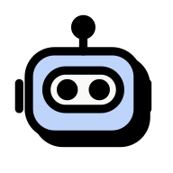
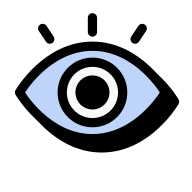

01 · O problema
O trabalho vivia em reunião

O trabalho vivia em reunião
A gente discutia bem e decidia bem. Depois alguém tinha que transformar aquilo em PRD, story, relatório e protótipo. Esse alguém sempre demorava.

A garantia prévia custava semanas
Como construir era caro, quase toda validação acontecia antes do desenvolvimento. Fazia sentido, e consumia semanas.
02 · O que a gente fez
Da transcrição ao entregável
- Entrada
Transcrição dos rituais
O que o time já falava em reunião, agora capturado como matéria prima.

CamadaHabilidades no Claude
Habilidades que a gente criou leem a transcrição e devolvem os rascunhos.
- Saída
Cinco entregas
- Visão de produto
- PRD
- User stories
- Relatório de usabilidade
- Protótipo
 01Visão de produto
01Visão de produto
Vira direção antes de virar backlog. A habilidade lê a transcrição do ritual e devolve o rascunho da visão. O time revisa e ajusta, em vez de escrever do zero depois da conversa.
 02PRD
02PRD
Chega pronto para discussão, não para redação. Com o PRD já rascunhado, a Planning deixou de ser um rito semanal. Acontece sob demanda, e a maior parte dela é assíncrona.
03User stories
Entram no Kanban já documentadas. O refinamento virou tirar dúvida sobre o que já está escrito na story e desenhado no protótipo. Foi o que derrubou o ritual de quatro horas para quarenta minutos.
 04Relatório de usabilidade
04Relatório de usabilidade
Análise no lugar de rodada de teste. O Claude aponta problema de fluxo com consistência, usando heurística de Norman e Nielsen mais o que a gente já sabe do público da Omni.
05Protótipo
Nasce desenvolvido e segue direto para a engenharia. O protótipo sai do Claude Design e vai para o Claude Code, de onde a engenharia assume. Design usa o Claude Code para manter a biblioteca fiel à do código, que é a referência principal.
03 · Rituais
Saímos de Scrum para Kanban
Com o rascunho já pronto antes do encontro, o que sobrou para a agenda foi dúvida, não redação.
Planning
Virou assíncrona e sob demanda, não mais um rito semanal.

Daily
Ficou só com engenharia. Produto entra quando precisa.
Refinamento
De 4 horas para 40 minutos, porque virou tirar dúvida sobre o que já está escrito.
04 · O novo funil
Cinco fases, do sinal ao pós-lançamento
Identificação de oportunidades
Dado de produto, pesquisa e canais de feedback alimentam uma árvore de oportunidades que facilita escolher o que entra em pauta.
Quem conduz Produto e design, com dados alimentando a árvore.

Validação de desejabilidade e diferencial
Confirmamos se a aposta faz sentido antes de o time gastar tempo desenhando a solução.
Quem conduz Produto e design.
Definição e prototipagem
É aqui que nasce a maior parte da solução. O protótipo já sai desenvolvido e segue para a engenharia sem etapa de tradução no meio.
Quem conduz Produto, design e engenharia, com prototipação distribuída entre os três.
Delivery
Alfa na engenharia, que garante o funcionamento do que foi construído. Beta, aberto ou fechado, validando o experimento antes de abrir para todos.
Quem conduz Engenharia no alfa, time inteiro no beta.

Depois do lançamento
O foco vira satisfação e adoção. A validação qualitativa entra quando o dado quantitativo mostra desvio do esperado.
Quem conduz Produto, design e dados, junto de GA e GTM.
05 · Fluxo paralelo
O Design System corre por fora do funil
Em paralelo ao funil roda o fluxo do Design System, com componente aprovado direto no código antes de subir para o GitHub.
Hoje áreas fora de design também prototipam, CS inclusive, o que abriu uma discussão interna sobre controle. Resolvi separando o que cada protótipo pode prometer, não restringindo quem cria.
Criação
Novo componente nasce a partir de uma necessidade do produto.

Comportamento e uso
Definição escrita pensando também na leitura do Claude.

Aprovação no código
Validação direto no código, antes de subir para o repositório no GitHub.